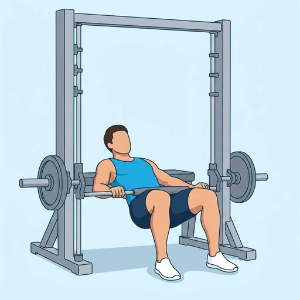
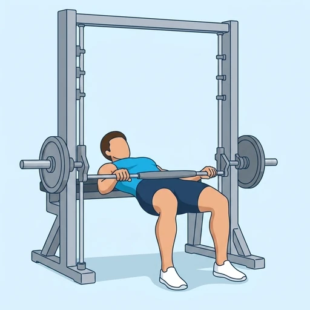
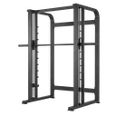

Smith Machine Hip Thrust
A hip thrust with the bar running in the Smith machine guides, so the load travels in a fixed vertical line across the hips while the shoulders stay supported on a bench.
Upper legs · Smith Machine · Beginner


Muscles worked by the Smith Machine Hip Thrust
Primary
Secondary
Also called: glute, glutes, gluteus maximus, buttocks, butt, glute med.
Equipment

Smith MachineAlso called: smith bar, guided barbell, fixed barbell, smith press.
How to do the Smith Machine Hip Thrust
- Set a flat bench inside the Smith machine, parallel to the bar and positioned so the bar will sit over your hip crease.
- Set the bar low enough that you can get under it while seated on the floor, then sit with your upper back against the bench.
- Roll the bar over your hips, pad it if you need to, and unhook it with your feet flat and about hip-width apart.
- Drive through your heels and extend your hips until your thighs and torso form a straight line, squeezing the glutes at the top.
- Lower your hips under control until they are just off the floor, and repeat for the desired number of repetitions.
Form tips
- Line the bench up before you load the bar. The bar can only move straight up and down, so if the bench is out of place the bar lands on your stomach or your thighs and there is no adjusting mid-set.
- Set the safety stops where the bar sits at the bottom of your range. Getting out from under a loaded Smith bar on the floor is awkward, and the stops make it a non-event.
- Look at a point in front of you rather than at the ceiling. Keeping the chin tucked stops the movement turning into a lower-back arch at lockout.
At a glance
| Body part | Upper legs |
|---|---|
| Category | Strength |
| Force type | Push |
| Mechanic | Compound |
| Difficulty | Beginner |
| Equipment | Smith Machine |
| Goals | Hypertrophy, Strength |
| Tags | Leg day, Lower back safe, Knee safe, Shoulder safe, No axial load, Requires bench |
| MET | 6.0 (metabolic equivalent, for calorie estimates) |
| Unilateral | No |
| Bodyweight | No |
| Dataset id | smith-machine-hip-thrust |
Smith Machine Hip Thrust in German & Spanish
| German | Hip Thrust an der Smith-Maschine |
|---|---|
| Spanish | Hip Thrust en Máquina Smith |
Descriptions, instructions and tips ship in all three languages in the JSON.
Related exercises
Exercise data (JSON)
The record below is exactly what exercises.json ships for this exercise — names, descriptions, instructions and tips in English, German and Spanish.
{
"id": "smith-machine-hip-thrust",
"name_en": "Smith Machine Hip Thrust",
"name_de": "Hip Thrust an der Smith-Maschine",
"name_es": "Hip Thrust en Máquina Smith",
"description_en": "A hip thrust with the bar running in the Smith machine guides, so the load travels in a fixed vertical line across the hips while the shoulders stay supported on a bench.",
"description_de": "Ein Hip Thrust mit der Stange in den Führungen der Smith-Maschine, sodass die Last auf einer festen senkrechten Bahn über die Hüfte läuft, während die Schultern auf einer Bank aufliegen.",
"description_es": "Un empuje de cadera con la barra en las guías de la máquina Smith, de modo que la carga recorre una línea vertical fija sobre las caderas mientras los hombros quedan apoyados en un banco.",
"category": "strength",
"force_type": "push",
"mechanic": "compound",
"difficulty": "beginner",
"equipment": "smith_machine",
"body_part": "upper_legs",
"primary_muscles": [
"gluteus_maximus",
"gluteus_medius"
],
"secondary_muscles": [
"hamstrings"
],
"goals": [
"hypertrophy",
"strength"
],
"tags": [
"leg_day",
"lower_back_safe",
"knee_safe",
"shoulder_safe",
"no_axial_load",
"requires_bench"
],
"variation_group": "hip-thrust",
"is_unilateral": false,
"is_bodyweight": false,
"instructions_en": [
"Set a flat bench inside the Smith machine, parallel to the bar and positioned so the bar will sit over your hip crease.",
"Set the bar low enough that you can get under it while seated on the floor, then sit with your upper back against the bench.",
"Roll the bar over your hips, pad it if you need to, and unhook it with your feet flat and about hip-width apart.",
"Drive through your heels and extend your hips until your thighs and torso form a straight line, squeezing the glutes at the top.",
"Lower your hips under control until they are just off the floor, and repeat for the desired number of repetitions."
],
"instructions_de": [
"Stelle eine Flachbank parallel zur Stange in die Smith-Maschine, so positioniert, dass die Stange über deiner Hüftbeuge liegt.",
"Setze die Stange tief genug, dass du am Boden sitzend darunter kommst, und lehne dich mit dem oberen Rücken an die Bank.",
"Rolle die Stange über deine Hüfte, polstere sie bei Bedarf und hake sie aus, die Füße flach und etwa hüftbreit.",
"Drücke über die Fersen und strecke die Hüfte, bis Oberschenkel und Oberkörper eine Linie bilden, mit fester Anspannung der Gesäßmuskeln oben.",
"Senke die Hüfte kontrolliert ab, bis sie knapp über dem Boden ist, und wiederhole für die gewünschte Anzahl an Wiederholungen."
],
"instructions_es": [
"Coloca un banco plano dentro de la máquina Smith, paralelo a la barra y situado de forma que la barra quede sobre el pliegue de tu cadera.",
"Baja la barra lo suficiente para poder pasar por debajo sentado en el suelo, y apoya la parte alta de la espalda en el banco.",
"Rueda la barra sobre las caderas, ponle una almohadilla si la necesitas y desengánchala, con los pies planos y a la anchura de las caderas.",
"Empuja con los talones y extiende las caderas hasta que muslos y torso formen una línea recta, apretando los glúteos arriba.",
"Baja las caderas de forma controlada hasta quedar justo por encima del suelo y repite el número de repeticiones deseado."
],
"tips_en": [
"Line the bench up before you load the bar. The bar can only move straight up and down, so if the bench is out of place the bar lands on your stomach or your thighs and there is no adjusting mid-set.",
"Set the safety stops where the bar sits at the bottom of your range. Getting out from under a loaded Smith bar on the floor is awkward, and the stops make it a non-event.",
"Look at a point in front of you rather than at the ceiling. Keeping the chin tucked stops the movement turning into a lower-back arch at lockout."
],
"tips_de": [
"Richte die Bank aus, bevor du die Stange belädst. Die Stange bewegt sich nur senkrecht — steht die Bank falsch, landet die Stange auf dem Bauch oder den Oberschenkeln, und mitten im Satz lässt sich das nicht korrigieren.",
"Setze die Sicherheitsablagen dorthin, wo die Stange am Ende des Bewegungsumfangs liegt. Unter einer beladenen Smith-Stange am Boden hervorzukommen ist unbequem, mit Ablagen ist es kein Thema.",
"Schaue auf einen Punkt vor dir statt an die Decke. Ein leicht angezogenes Kinn verhindert, dass die Bewegung oben in ein Hohlkreuz kippt."
],
"tips_es": [
"Alinea el banco antes de cargar la barra. La barra solo sube y baja en vertical, así que si el banco está desplazado la barra acaba sobre el abdomen o los muslos, y a mitad de serie no hay forma de corregirlo.",
"Pon los topes de seguridad donde queda la barra al final del recorrido. Salir de debajo de una barra Smith cargada estando en el suelo es incómodo, y con los topes deja de ser un problema.",
"Mira a un punto por delante de ti en lugar de al techo. Mantener la barbilla recogida evita que el movimiento acabe en un arqueo lumbar al bloquear arriba."
],
"met": 6.0,
"images": {
"flat": {
"start": "images/flat/smith-machine-hip-thrust-start.webp",
"peak": "images/flat/smith-machine-hip-thrust-peak.webp"
}
}
}Fetch just this exercise
const { exercises } = await fetch(
"https://exercise-dataset.com/exercises.json"
).then(r => r.json());
const ex = exercises.find(e => e.id === "smith-machine-hip-thrust");Free for personal and commercial in-app use with attribution (“Exercise data by RepDB”) — see the license and ready-made attribution snippets. Redistributing the data as a dataset or API is not permitted.